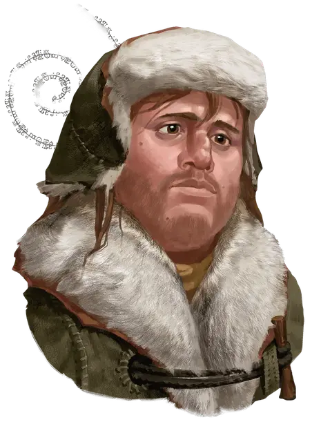

Сирак из Сюзейла
Sirac of Suzail
Средний Гуманоид (Человек чондатанец), законно-добрый, именной НИП

Класс Доспеха 14 (кожаный доспех)
Хиты 22 (5к8)
Скорость 30 футов
| мод | спас | ||
|---|---|---|---|
| СИЛ | 14 | +2 | +2 |
| ЛОВ | 17 | +3 | +3 |
| ТЕЛ | 11 | +0 | +0 |
| мод | спас | ||
|---|---|---|---|
| ИНТ | 12 | +1 | +1 |
| МДР | 13 | +1 | +1 |
| ХАР | 16 | +3 | +3 |
Навыки Атлетика +4, Выживание +3, Проницательность +3
Чувства пассивное Восприятие 11
Языки Общий, Орочий
Опасность 0
Бонус мастерства +2
Особенности
Информация для отыгрыша. Служитель Торма, Сирак вырос на улицах Сюзейла, столицы Кормира. Он прибыл в Долину Ледяного Ветра, чтобы стать рыболовом и промышлять форель, но вместо этого нашёл религию. Бастард Артуса Цимбера, именитого человеческого искателя приключений, Сирак не видел своего отца с детских лет.
Идеал. : «Человек без долга или верности - ничто».
Привязанность. : «Долина Ледяного Ветра - это место, где мне суждено прожить жизнь.»
Слабость. : «Я честен до крайности.»
Действия
Короткий меч. . Рукопашная атака оружием: +5 к попаданию, досягаемость 5 фт., одна цель. Попадание: 6 (1к6+3) колющего урона.
Дротик. . Дальнобойная атака оружием: +5 к попаданию, дистанция 20/60 фт., одна цель. Попадание: 5 (1к4+3) колющего урона. Сирак носит с собой шесть дротиков.
Реакции
Парирование. Сирак добавляет 2 к своему КД против одной рукопашной атаки оружием, которая должна попасть по нему. Для этого Сирак должен видеть атакующего и держать в руке рукопашное оружие.